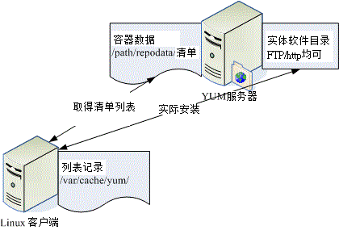

在现在的因特网上面，cracker 实在是太多了！这些闲人会利用已经存在的系统漏洞，来进行侦测、入侵你的主机。
因此，除了未来架设防火墙之外，最重要的 Linux 日常管理工作，莫过于软件的升级了！
不过，如果使用者还得要自己每天观察网络安全通报，并主动去查询各大 distribution 针对这些漏洞来提供升级软件包，
那真是太不人性化了！因此，目前就有很多在线直接更新的机制出现了！有了这些在线直接更新软件的手段与方法，
我们系统管理员在管理主机系统上面，可就轻松的多啰！
 7.2.1 如何进行软件升级
7.2.1 如何进行软件升级
通常鸟哥安装好 Linux 之后，会先开启系统默认的防火墙机制，然后第一件事情就是进行全系统更新啦！
不论是哪一套 Linux 鸟哥都是这样做的，因为要避免软件资安的问题嘛！好了，那么 Linux 上面的软件该如何进行更新与升级呢？
还记得你是如何安装软件的吗？不就是 rpm,
tarball 与 dpkg 吗？
所以啰，你的软件如果想要升级，那就得依据当时你安装该软件的方式来进行升级啊！而每种方式都有其适用性：
- RPM：
这是目前最常见于 Linux distribution 当中的软件管理方式，包括 CentOS / Fedora / SuSE / Red Hat /
Mandriva 等等，都是使用这个方式来管理的；
- Tarball：
利用软件的官方网站所释出的原始码在您的系统上面编译与安装，
一般来说，由于软件是直接在自己的机器上面编译的，所以效能会比较好一些。
不过，升级的时候就比较麻烦，因为又得要下载新的原始码并且重新编译一次。
这种安装模式常见于某些特殊软件 (没有包含在 distribution 当中)，或者是 Gentoo
这个强调效能的 distribution；
- dpkg：
是 debian 这个 distribution 所使用的软件管理方式，与
RPM 很类似，都是透过预先编译的处理，可以让 end user 直接使用来升级与安装。
举例来说，如果你的系统是 CentOS ，我们知道他使用的是 RPM 类型的软件管理模式，那如果你想要安装 B2D
的软件怎办？要注意， B2D 是使用 debian 的 dpkg 来管理软件的，两者并不相同啊！要互相安装太难了！
所以说，要升级的话，得先了解到你系统上的软件安装与管理的方法才行。
不过，有个特殊案例，那就是旧版本的 Linux (例如 Red Hat 9) 的软件升级该如何是好？
由于旧版本的软件支持度本来就比较差，商业公司或者是社群也没有这么多心力放在旧版本的支持上，
所以，你这个时候可以选择： (1)升级到较新的版本，例如 CentOS 6.x，或者是
(2)利用 Tarball 来自行升级核心与软件。不过，比较建议升级到新版本啦，因为要自行以手动方式由 Tarball
安装到最新的版本，实在是很费时费力，而且还得要常常查阅官方网站所推出的最新消息，
漏过一则都可能发生无法预期的状况。
我们都晓得在 Windows 的环境下，他有提供一个 Live update 的项目可以自动的在线升级，
甚至很多的防病毒软件与防木马软件也都有推出实时的在线更新，如此一来可以让您的软件维持在最新版的状况，
真是好啊！咦！那我们的 Linux 是否有这样的功能？如果有的话，那么系统自动进行软件升级，
不就可以轻松又快乐了？没错！确实是这样的！所以就让我们来谈一谈 Linux 的在线升级机制吧！
在 Linux 最常见的软件安装方式： RPM / Tarball / dpkg 当中，Tarball 由于取得的是原始码，
所以要用 Tarball 来作在线自动更新是不太可能进行的，所以仅能用 RPM 或 dpkg 这两种软件管理的方式来进行在线更新了。
但 RPM 与 dpkg 不是有所谓的相依属性吗？这倒不需要担心吶！因为我们的 RPM 与 dpkg 软件档案都有一些软件的基本信息，
并同时记录了软件的相依属性 (记得使用 rpm -q 的查询吗)，所以当分析这些基本信息并使用一些机制将这些相依信息记录下来后，
再透过一些额外的网络功能，就能够自动的分析你的系统与修补软件之间的差异，
并可进一步帮你分析所需要升级与相依属性的软件，就可达成自动升级的理想啦！
由于各家 distributions 在管理系统上都有自己独特的想法，所以在分析 RPM 或 dpkg 软件与方式上面就有所不同，
也就有底下这些不同的在线升级机制啦：
- yum：
CentOS 与 Fedora 所常用的自动升级机制，透过 FTP 或 WWW 来进行在线升级以及在线直接安装软件；
- apt：
最早由 debian 这个 distribution 所发展，现在 B2D 也是使用 apt ，同时由于 apt 的可移植性，
所以只要你的 RPM 可以使用 apt 来管理的话，就可以自行建立 apt 服务器来提供其他使用者进行在线安装与升级。
- you：
所谓的 Yast Online Update (YOU) 是由 SuSE 所自行开发出来的在线安装升级方式，
经过注册取得一组账号密码后，就能够使用 you 的机制来进行在线升级。不过如果是免费的版本，
则仅有 60 天的试用期！
- urpmi：
这个则是 Mandriva 所提供的在线升级机制！
讲了这些升级机制并且与 distribution 作了对应，你就该了解到：『每个
distribution 可以使用的在线升级机制都不相同』的啊！所以请参考你的 distribution
所提供的文件来进行在线升级的设定喔！否则就得要自行手动下载安装了！ @_@
鸟哥这里都是使用 CentOS 这个 Red Hat 兼容的 distributions 来介绍的，因此，底下仅介绍了 yum 而已。
不过，yum 已经能够适用于 CentOS, Red Hat Enterprise Linux, Fedora 等等，也应该是挺够用的了！
另外，基础篇里面已经谈过 rpm 与 yum 的用法，所以在这里仅是加强介绍与更新有关的用法而已喔！
7.2.2 CentOS 的 yum
软件更新、映像站使用的原理
我们曾经在基础篇里面谈过 yum 了，基本上他的原理是，我们的 CentOS 会跑到 yum 服务器上头，下载了官方网站释出的 RPM
表头列表数据，该数据除了记载每个 RPM 软件的相依性之外，也说明了 RPM 档案所放置的容器 (repository)
所在。因此透过分析这些数据，我们的 CentOS 就能够直接使用 yum 去下载与安装所需要的软件了！
详细图标与流程有点像这样：

图 7.2-1、使用 yum 下载清单表头与取得容器相关资料示意图
- 先由配置文件判断 yum server 所在 IP 地址；
- 连接到 yum server 后，先下载新的 RPM 档案的表头数据；
- 分析比较使用者所欲安装/升级的档案，并提供使用者确认；
- 下载用户选择的档案到系统中的 /var/cache/yum ，并进行实际安装；
由于你所下载的清单当中已经含有所有官方网站所释出的 RPM 档案的表头相依属性的关系，
所以如果你想要安装的软件包含某些尚未安装的相依软件时，我们的 yum 会顺便帮你下载所需要的其他软件，预安装后，
再安装你所实际需要的软件！从分析、下载到安装，全部一口气搞定！很简单的啦！
不过，恐怕还是有问题。如果全世界使用 CentOS 的朋友通通联机到同一部 Yum 服务器去下载所需要的 RPM 档案，哇！
那带宽不就很容易被塞爆！那怎办？没关系，有所谓的映射站啊！ CentOS 在世界各地都有映射站，这些映射站会将官网的
yum 服务器的数据复制一份，同时在映射站上面也提供同样的 yum 功能，因此，你可以在任何一部 yum
服务器的映像站上面下载与安装软件。底下是 CentOS 官网上面列出的亚洲地区映射站一览表：
现在的 yum 又很聪明，它会自动的去分析离你的主机最近的那部映射站，然后直接使用该部映像主机作为你的 yum 来源，
因此，『理论上』你不需要更动任何设定，在台湾，你的 CentOS 就会使用台湾地区的 yum 服务器啰！就这么简单！
所以，接下来就让我们直接来谈谈怎么使用 yum 吧！
Tips:
yum 的原理与相关使用，我们在基础篇里面已经分门别类的介绍过了，因此底下仅就比较重要的部分介绍一下啰！
|  |
7.2.3 yum 的使用：
安装, 软件群组, 全系统更新
yum 可不止能够在线自动升级而已，他还可以作查询、软件群组的安装、整体版本的升级等等，好用的哩！
先来谈论一下 yum 这个指令的用法吧：
[root@www ~]# yum [option] [查询的工作项目] [相关参数]
选项与参数：
option：主要的参数，包括有：
-y ：当 yum 询问使用者的意见时，主动回答 yes 而不需要由键盘输入；
[查询的工作项目]：由于不同的使用条件，而有一些选择的项目，包括：
install ：指定安装的软件名称，所以后面需接『 软件名称 』
update ：进行整体升级的行为；当然也可以接某个软件，仅升级一个软件；
remove ：移除某个软件，后面需接软件名称；
search ：搜寻某个软件或者是重要关键字；
list ：列出目前 yum 所管理的所有的软件名称与版本，有点类似 rpm -qa；
info ：同上，不过有点类似 rpm -qai 的执行结果；
clean ：下载的档案被放到 /var/cache/yum ，可使用 clean 将他移除，
可清除的项目：packages | headers | metadata | cache 等；
在[查询的工作项目]部分还可以具有整个群组软件的安装方式，如下所示：
grouplist ：列出所有可使用的『软件群组』，例如 Development Tools 之类的；
groupinfo ：后面接 group_name，则可了解该 group 内含的所有软件名；
groupinstall：这个好用！可以安装一整组的软件群组，相当的不错用！
更常与 --installroot=/some/path 共享来安装新系统
groupremove ：移除某个软件群组；
# 范例一：搜寻 CentOS 官网提供的软件名称是否有与 RAID 有关的？
[root@www ~]# yum search raid
Loaded plugins: fastestmirror
Loading mirror speeds from cached hostfile <==这里就是在测试最快的映射站
* base: ftp.isu.edu.tw <==共有四个容器内容
* extras: ftp.isu.edu.tw <==每个容器都在 ftp.isu.edu.tw 上
* updates: ftp.isu.edu.tw
base | 3.7 kB 00:00 <==下载软件的表头列表中
extras | 951 B 00:00
updates | 3.5 kB 00:00
=================== Matched: raid =================<==找到的结果如下
dmraid.i686 : dmraid (Device-mapper RAID tool and library)
....(中间省略)....
mdadm.x86_64 : The mdadm program controls Linux md devices (software RAID
....(底下省略)....
# 范例二：上述输出结果中， mdadm 的功能为何？
[root@www ~]# yum info mdadm
Loaded plugins: fastestmirror
Loading mirror speeds from cached hostfile
* base: ftp.twaren.net
* extras: ftp.twaren.net
* updates: ftp.twaren.net
Installed Packages <==这里说明这是已经安装的软件！
Name : mdadm
Arch : x86_64
Version : 3.1.3
Release : 1.el6
Size : 667 k
Repo : installed
From repo : anaconda-CentOS-201106060106.x86_64
Summary : The mdadm program controls Linux md devices (software RAID
URL : http://www.kernel.org/pub/linux/utils/raid/mdadm/
License : GPLv2+
Description: The mdadm program is used to create, manage, and monitor
....(底下省略)....
# 由上述底线的 Summary 关键词，知道这软件在达成软件磁盘阵列功能！！
|
yum 真是个很好用的东西，它可以直接查询是否有某些特殊的软件名称。举例来说，你可以利用底下的两个方式取得软件名称：
- yum search "一些关键词"
- yum list (可列出所有的软件文件名)
然后再以正规表示法取得关键词，或者是『 yum
info "软件名称" 』就能够知道该软件的用途，最后再决定要不要安装啊！上面的范例一就是在找出磁盘阵列的管理软件。
如果确定要安装时，那就参考参考底下的流程吧！
# 范例三：安装某个软件吧！以 mdadm 这个软件名为例：
[root@www ~]# yum install mdadm
....(前面省略)....
Setting up Install Process
Package mdadm-3.1.3-1.el6.x86_64 already installed and latest version
Nothing to do
[root@www ~]# yum install mdadma
Setting up Install Process
No package mdadma available.
Nothing to do
|
仔细的看上述的两个指令，第二个指令鸟哥故意写错字，让软件名称由 mdadm 变成 mdadma
了！仿真同学如果打错字时所输出的讯息。由上述的讯息你可以知道，同样结果是『Nothing to do』，但是 yum
会告诉你该软件是『已安装 (installed and lastest version)』还是『没有该软件 (No package mdadma
avaliable)』。作这个范例是希望朋友们能够仔细的看输出的讯息啦！好啦！我们还是来安装一个不曾装过的，
就拿 javacc 这套软件来装看看好了！
[root@www ~]# yum list javacc*
Available Packages
javacc.x86_64 4.1-0.5.el6 base
javacc-demo.x86_64 4.1-0.5.el6 base
javacc-manual.x86_64 4.1-0.5.el6 base
# 共有三套软件，分别是 javacc, javacc-demo, javacc-manual ，版本为 4.1-0.5.el6，
# 软件是放置到名称为 base 的容器当中存放的。
[root@www ~]# yum install javacc
....(前面省略)....
Setting up Install Process
Resolving Dependencies
--> Running transaction check <==开始检查有没有相依属性的软件问题
---> Package javacc.x86_64 0:4.1-0.5.el6 set to be updated
....(中间省略)....
=========================================================================
Package Arch Version Repository Size
=========================================================================
Installing:
javacc x86_64 4.1-0.5.el6 base 895 k
Installing for dependencies:
java-1.5.0-gcj x86_64 1.5.0.0-29.1.el6 base 139 k
java_cup x86_64 1:0.10k-5.el6 base 197 k
sinjdoc x86_64 0.5-9.1.el6 base 705 k
Transaction Summary
=========================================================================
Install 4 Package(s) <==安装软件汇整，共安装 4 个，升级 0 个软件
Upgrade 0 Package(s)
Total download size: 1.9 M
Installed size: 5.6 M
Is this ok [y/N]: y <==让你确认要下载否！
Downloading Packages:
(1/4): java-1.5.0-gcj-1.5.0.0-29.1.el6.x86_64.rpm | 139 kB 00:00
(2/4): java_cup-0.10k-5.el6.x86_64.rpm | 197 kB 00:00
(3/4): javacc-4.1-0.5.el6.x86_64.rpm | 895 kB 00:00
(4/4): sinjdoc-0.5-9.1.el6.x86_64.rpm | 705 kB 00:00
-------------------------------------------------------------------------
Total 3.1 MB/s | 1.9 MB 00:00
Running rpm_check_debug
Running Transaction Test
Transaction Test Succeeded
Running Transaction
Installing : java-1.5.0-gcj-1.5.0.0-29.1.el6.x86_64 1/4
Installing : 1:java_cup-0.10k-5.el6.x86_64 2/4
Installing : sinjdoc-0.5-9.1.el6.x86_64 3/4
Installing : javacc-4.1-0.5.el6.x86_64 4/4
Installed: <==主要需要安装的
javacc.x86_64 0:4.1-0.5.el6
Dependency Installed: <==为解决相依性额外装的
java-1.5.0-gcj.x86_64 0:1.5.0.0-29.1.el6 java_cup.x86_64 1:0.10k-5.el6
sinjdoc.x86_64 0:0.5-9.1.el6
Complete!
|
瞧！经过 yum 我们可以很轻松的就安装好一个软件，并且这个软件已经主动的帮我们做好相依属性的克服了，
真是方便到爆！另外，CentOS 6.x 默认的情况下，yum 下载的数据除了每个容器的表头清单档案之外，所有下载的 RPM 档案都会在安装完毕之后予以删除！
这样你的系统就不会有容量被下载的数据塞爆的问题。但如果你想要下载的 RPM 档案继续保留在 /var/cache/yum
当中，就得要修改 /etc/yum.conf 配置文件了！
[root@www ~]# vim /etc/yum.conf <==看看就好，不要真的作！
[main]
cachedir=/var/cache/yum/$basearch/$releasever
keepcache=1
debuglevel=2
logfile=/var/log/yum.log
exactarch=1
obsoletes=1
....(底下省略)....
|
上述的特殊字体地方将 0 改成 1 ，这样就能够让你的 RPM 档案保存下来。不过，除非你有好多部主机要更新，
你想利用一台先 yum 升级且下载，然后将所有的 RPM 档案收集起来给内网的机器升级 (rpm -Fvh *.rpm) 之外，
上面的 vim 修改动作不建议修改！因为你的 /var 恐怕会被塞爆啊！再次提醒！
什么是『软件群组』呢？由于 RPM 软件将一个大项目分成好几个小计划来执行，每个小计划都可以独立安装，
这样的好处是可以让使用者与软件开发者安装不同的环境！举例来说，在桌面系统中 (Desktop)，一般用户应该不会跑去发展软件吧？
所以针对桌面计算机，软件群组又分为 "Desktop Platform" 与开发者 "Desktop Platform Development" 两部份，
每个软件群组内又含有多个不同的 RPM 软件档案！这样做的用途是方便使用者安装一整套的项目啦！
那么系统有多少软件群组呢？又该如何观察某个软件群组有拥有的 RPM 档案呢？我们就利用 Desktop
Platform 这个项目来说明一下啰：
# 范例四：查询系统有的软件群组有多少个？
[root@www ~]# LANG=C yum grouplist
Installed Groups: <==这个是已安装的软件群组
Additional Development
Arabic Support
Armenian Support
Base
....(中间省略)....
Available Groups: <==这个是尚可安装的软件群组
Afrikaans Support
Albanian Support
Amazigh Support
....(中间省略)....
Desktop Platform
Desktop Platform Development
....(后面省略)....
# 范例五：那么 Desktop Platform 内含多少个 RPM 软件呢？
[root@www ~]# yum groupinfo "Desktop Platform"
Group: 桌面环境平台
Description: 受支援的 CentOS Linux 桌面平台函式库。
Mandatory Packages: <==主要的会被安装的软件有这些
atk
....(中间省略)....
Optional Packages: <==额外可选择的软件是这些
qt-mysql
....(底下省略)....
# 如果你确定要安装这个软件群组的话，那就这样做：
[root@www ~]# yum groupinstall "Desktop Platform"
# 因为这里在介绍服务器的环境，所以上面的动作鸟哥是按下 n 来拒绝安装的！
|
利用这个『 yum groupinstall "软件群组名" 』可以让你一口气安装很多的软件，
而不必担心某个软件忘记装了！实在是很不错啦～而且利用 groupinfo 的功能你也可以发现一些不错的软件数据，
如此一来，你就可以更方便的管理你的 Linux 系统了，很不错吧！
我们都知道使用『yum update』就可以进行软件的更新。不过你晓得吗？
yum update 也可以直接进行同一版本的升级喔！举例来说，你可以从 6.0 升级到 6.1 版本哩！而且中间过程完全无痛呦！
就跟一般软件升级而已，并没有不同呦！够愉快吧！
不过，如果你是想要从较旧版的 CentOS 5.x 升级到 6.x
的话，那么可能就得要多费些功夫了。为啥不要重灌比较快呢？因为你可能已经有些数据设定好，所以不想变更嘛！
但老实说，不同版本 (ex> 5.x --> 6.x) 间的升级最好还是不要尝试啦！重新安装可能是最好的状况。
底下列出酷学园的前辈提供的升级方式，以及 CentOS 官网直接提供的升级方式给你参考参考：
|
例题：
请设定一下工作排程，让你的 CentOS 可以每天自动更新系统
答：
可以使用『 crontab -e 』来动作，也可以编辑『 vim /etc/crontab 』来动作，
由于这个更新是系统方面的，所以鸟哥习惯使用 vim /etc/crontab 来进行指令的说明。
其实内容很简单： 40 5 * * * root yum -y update && yum clean packages 这样就可以自动更新了，
时间订在每天的凌晨 5:40 。
|
7.2.4 挑选特定的映射站：修改 yum
配置文件与清除 yum 快取
虽然 yum 是你的主机能够联机上 Internet 就可以直接使用的，不过，由于 CentOS 的映射站台可能会选错，
举例来说，我们在台湾，但是 CentOS 的映射站台却选择到了大陆北京或者是日本去，有没有可能发生啊！
有啊！鸟哥教学方面就常常发生这样的问题，要知道，我们联机到大陆或日本的速度是非常慢的呢！那怎办？
当然就是手动的修改一下 yum 的配置文件就好啰！
在台湾，鸟哥熟悉的 CentOS 映射站台主要有昆山科大、高速网络中心与义守大学。
在学术网络之外，鸟哥近来比较偏好高速网络中心，似乎更新的速度比较快，而且连接台湾学术网络也非常快速哩！
因此，鸟哥底下建议台湾的朋友使用高速网络中心的 ftp 主机资源来作为 yum 服务器来源喔！不过，因为鸟哥的机器很多都在昆山科大，
所以在学术网络上，使用的反而是昆山科大的 FTP 啰。目前高速网络中心对于 CentOS 所提供的相关网址如下：
如果你连接到上述的网址后，就会发现里面有一堆连结，那些连结就是这个 yum 服务器所提供的容器了！
所以高速网络中心也提供了 addons, centosplus, extras, fasttrack, os, updates 等容器，最好认的容器就是
os (系统默认的软件) 与 updates (软件升级版本) 啰！由于鸟哥在我的测试用主机是利用 x86_64 的版本，
因此那个 os 再点进去就会得到如下的可提供安装的网址：
为什么在上述的网址内呢？有什么特色！最重要的特色就是那个『 repodata
』的目录！该目录就是分析 RPM 软件后所产生的软件属性相依数据放置处！因此，当你要找容器所在网址时，
最重要的就是该网址底下一定要有个名为 repodata 的目录存在！那就是容器的网址了！
其他的容器正确网址，就请各位看倌自行寻找一下喔！现在让我们修改配置文件吧！
[root@www ~]# vim /etc/yum.repos.d/CentOS-Base.repo
[base]
name=CentOS-$releasever - Base
mirrorlist=http://mirrorlist.centos.org/?release=$releasever&arch=$basearch&repo=os
#baseurl=http://mirror.centos.org/centos/$releasever/os/$basearch/
gpgcheck=1
gpgkey=file:///etc/pki/rpm-gpg/RPM-GPG-KEY-CentOS-6
|
如上所示，鸟哥仅列出 base 这个容器的原始内容而已，其他的容器内容请自行查阅啰！上面的数据需要注意的是：
- [base]：
代表容器的名字！中刮号一定要存在，里面的名称则可以随意取。但是不能有两个相同的容器名称，否则 yum
会不晓得该到哪里去找容器相关软件列表档案。
- name：
只是说明一下这个容器的意义而已，重要性不高！
- mirrorlist=：
列出这个容器可以使用的映射站台，如果不想使用，可以批注到这行。由于等一下我们是直接设定映像站，
因此这行待会儿确实是需要批注掉的喔！
- baseurl=：
这个最重要，因为后面接的就是容器的实际网址！ mirrorlist
是由 yum 程序自行去捉映像站台， baseurl
则是指定固定的一个容器网址！我们刚刚找到的网址放到这里来啦！
- enable=1：
就是让这个容器被启动。如果不想启动可以使用 enable=0 喔！
- gpgcheck=1：
还记得 RPM 的数字签名吗？这就是指定是否需要查阅 RPM 档案内的数字签名！
- gpgkey=：就是数字签名的公钥文件所在位置！使用默认值即可
了解这个配置文件之后，接下来让我们修改整个档案的内容，让我们这部主机可以直接使用高速网络中心的资源吧！
修改的方式鸟哥仅列出 base 这个容器项目而已，其他的项目请您自行依照上述的作法来处理即可！
[root@www ~]# vim /etc/yum.repos.d/CentOS-Base.repo
[base]
name=CentOS-$releasever - Base
baseurl=http://ftp.twaren.net/Linux/CentOS/6/os/x86_64/ <==就属它最重要！
gpgcheck=1
gpgkey=file:///etc/pki/rpm-gpg/RPM-GPG-KEY-CentOS-6
# 底下其他的容器项目，请自行到高速网络中心去查询后自己处理！
[root@www ~]# yum clean all <==改过配置文件，最好清除既有清单
|
接下来当然就是给他测试一下啰！如何测试呢？再次使用 yum 即可啊！
# 范例：列出目前 yum server 所使用的容器有哪些？
[root@www ~]# yum repolist all
repo id repo name status
base CentOS-6 - Base enabled: 6,019
c6-media CentOS-6 - Media disabled
centosplus CentOS-6 - Plus disabled
contrib CentOS-6 - Contrib disabled
debug CentOS-6 - Debuginfo disabled
extras CentOS-6 - Extras enabled: 0
updates CentOS-6 - Updates enabled: 1,042
repolist: 7,061
# 在 status 上写 enabled 才是有启动的！由于 /etc/yum.repos.d/
# 有多个配置文件，所以你会发现还有其他的容器存在。
|
由于我们是修改系统默认的配置文件，事实上，我们应该要在 /etc/yum.repos.d/ 底下新建一个档案，
该扩展名必须是 .repo 才行！但因为我们使用的是指定特定的映射站台，而不是其他软件开发生提供的容器，
因此才修改系统默认配置文件。但是可能由于使用的容器版本有新旧之分，你得要知道，
yum 会先下载容器的清单到本机的 /var/cache/yum 里面去！那我们修改了网址却没有修改容器名称 (中刮号内的文字)，
可能就会造成本机的列表与 yum 服务器的列表不同步，此时就会出现无法更新的问题了！
那怎么办啊？很简单，就清除掉本机上面的旧数据即可！需要手动处理吗？不需要的，
透过 yum 的 clean 项目来处理即可！
[root@www ~]# yum clean [packages|headers|all]
选项与参数：
packages：将已下载的软件档案删除
headers ：将下载的软件文件头删除
all ：将所有容器数据都删除！
# 范例：删除已下载过的所有容器的相关数据 (含软件本身与列表)
[root@www ~]# yum clean all
|
|
例题：
有一个网址： http://free.nchc.org.tw/drbl-core/i386/RPMS.drbl-stable/ ，里面包含了台湾的国家高速网络中心所发展的自由软件。
请依据该网址提供的数据，做成系统可以自动网络安装的 yum 格式。
答：
由于 http://free.nchc.org.tw/drbl-core/i386/RPMS.drbl-stable/ 里面就有 repodata/ 目录，因此，这个网址可以直接做成 yum 的容器配置文件。
你可以这么做的：
[root@www ~]# vim /etc/yum.repos.d/drbl.repo
[drbl]
name=This is DRBL site
baseurl=http://free.nchc.org.tw/drbl-core/i386/RPMS.drbl-stable/
enable=1
gpgcheck=0
[root@www ~]# yum search drbl
Loaded plugins: fastestmirror
Loading mirror speeds from cached hostfile
============================== Matched: drbl ==============================
clonezilla.i386 : Opensource Clone System (ocs), clonezilla
drbl.i386 : DRBL (Diskless Remote Boot in Linux) package.
drbl-chntpw.i386 : Offline NT password and registry editor
....(底下省略)....
[root@www ~]# yum repolist all
Loaded plugins: fastestmirror
Loading mirror speeds from cached hostfile
repo id repo name status
base CentOS-6 - Base enabled: 6,019
c6-media CentOS-6 - Media disabled
centosplus CentOS-6 - Plus disabled
contrib CentOS-6 - Contrib disabled
debug CentOS-6 - Debuginfo disabled
drbl This is DRBL site enabled: 36 <==新的在此！
extras CentOS-6 - Extras enabled: 0
updates CentOS-6 - Updates enabled: 1,042
repolist: 7,097
|
drbl 这个新增的容器里面，拥有 36 个软件喔！这样够清楚吗？
|